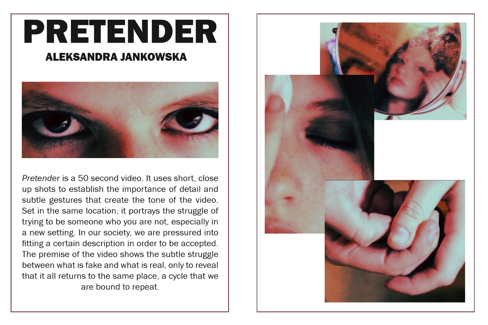

Pretender
At what point do we cross a line where we completely lose ourselves? Everyday, switching between masks. A shapeshifter, hiding both face and mind. Lost in between multiple worlds, to the point, where all that is left is just a pretender.
